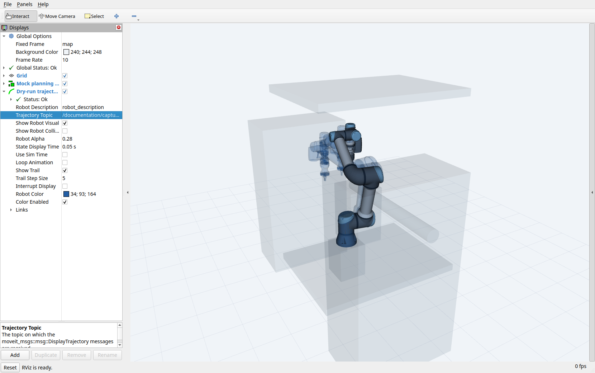

Execution controls
Use Dry Run to preview a sequence, Execute to run it, and Pause, Resume, or Stop to control progress.
Pause and cancellation normally take effect after the active task or batch finishes. Consecutive MoveTo and End Effector steps can share a batch, so several rows may finish before either request takes effect.
Preview
Select Dry Run and press Execute to plan without executing the task trajectories.
Inspect the planned motion in 3D View or RViz and check the Activity Log for the result.
Clear Dry Run and press Execute when ready to run the sequence. Execution uses the real or mock hardware selected at launch.
Preview supports only Move To and End Effector tasks. A Pause, vision, tool-exchange, or pipettor step prevents previewing the whole sequence. Preview initializes MoveIt for Start Gripper and confirms planning, not successful device operation.
How multiple steps are previewed depends on batching:
Batching on: supported steps are planned as a connected sequence.
Batching off: each step starts from the live robot position. Earlier preview endpoints are not carried forward.
For a robot at A and targets B then C, unbatched previews plan A→B and A→C. They do not check the B→C transition. The GUI displays the latest trajectory, replacing the previous one. See the preview comparison.
A successful preview may be cached for execution. Resolved pose values are part of the cache key, but scene changes are not. Generate and inspect a fresh preview after changing the scene; see cache behavior.
{kind=link}

A recorded mock preview displayed in RViz. The translucent robot poses show the planned path to safe_tool_exchange; displaying this trajectory does not command the controller. Open the full-resolution screenshot.
{kind=link}
Pause and resume
Press Pause to request a pause after the active task or batch.
Wait for
PAUSED. While the request is pending, the state isCOMPLETING_TASKand execution continues.Press Resume to continue. Resume is available once the run is paused.
If the active task or batch is the last one, the sequence can finish before entering PAUSED.
To stop at a planned inspection point, insert a Pause task in the sequence. It waits for Resume or cancellation and has no timer. A sequence containing it cannot be previewed as a whole.
The sequence editor stays locked while a run is pending, running, or paused. Resume continues the submitted sequence.
Stop and cancellation
Stop requests cancellation; it is not an emergency stop. Use the cell’s physical stop system when immediate stopping is required.
The GUI keeps tracking submitted work until the server returns a final result:
Request state |
What Stop does |
|---|---|
Before submission |
Stops without sending a goal. |
Waiting for acceptance |
Waits for the reply, then requests cancellation if the goal was accepted. |
Accepted |
Requests cancellation and waits for the actual terminal result. The active task or batch can still be running. |
While waiting, the Activity Log reports “Stopping… waiting for task completion”. A run can finish successfully before cancellation takes effect; the GUI reports that actual outcome. A final result is still a software report, not an independent measurement of physical stoppage.
When the server accepts cancellation, it reports CANCELING and checks the request at task or batch boundaries. Cancellation does not interrupt an active movement in the middle of a batch. If the active task or batch fails after cancellation was requested, the orchestrator enters FAULTED and rejects new goals until it is restarted.
The custom MCP stop_robot tool requests cancellation of all orchestrator goals. An accepted request also waits for a task or batch boundary.
States and results
The server publishes these states on /beambot/execution_state:
State |
Meaning |
|---|---|
|
Initial or cleanup state; check the task result separately. |
|
Processing a task or batch. |
|
Pause requested; finishing the active task or batch. |
|
Waiting for Resume or cancellation. |
|
Cancellation accepted; waiting for a cancellation check. |
|
Execution is uncertain or an unhandled exception occurred; new goals are rejected. |
IDLE can remain visible during MoveIt initialization and can follow a failed task. It does not mean the last run succeeded. These states—and the tool name on /beambot/current_gripper—are software reports, not independent confirmation of physical stoppage or attachment.
Use the final action result to determine success or failure. It includes success, error_message, completed_steps, and total_steps. Progress counts steps, not elapsed time. If a batch fails partway through, the completed count excludes that batch; some of its movements or device actions may already have happened.
After FAULTED, diagnose the failure and establish the robot and controller state before restarting. There is no public reset-fault service, and Resume does not clear faults. See execution troubleshooting.